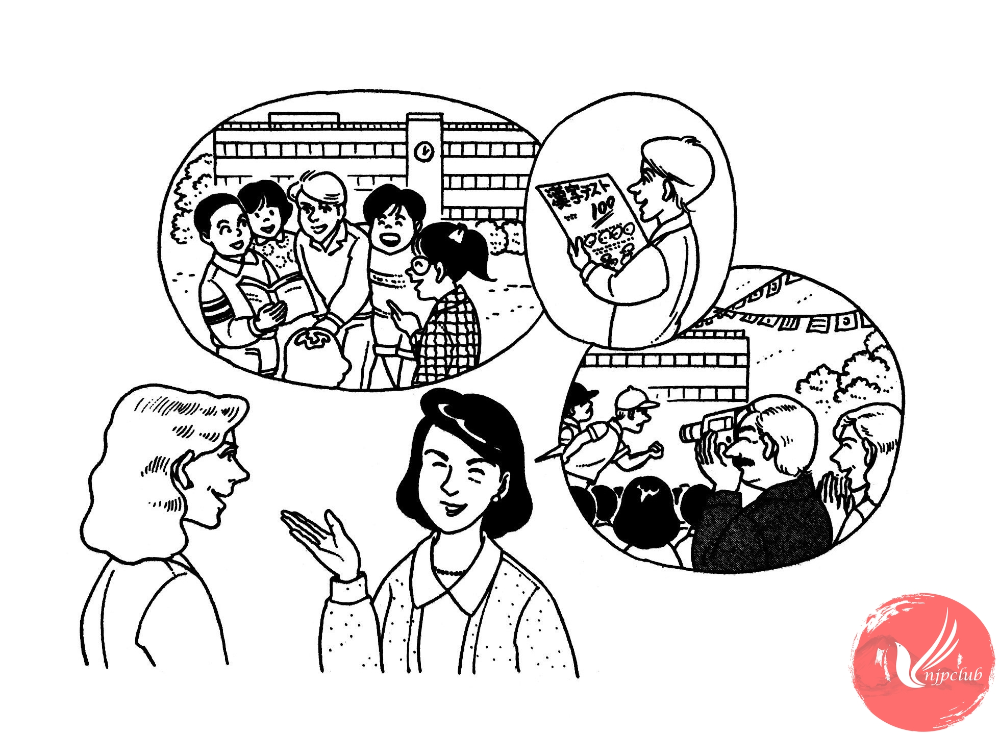

| クララ： |
先生、ハンスは 学校で どうでしょうか。 |
|
友達が できたか どうか、心配なんですが･････。 |
|
| 伊藤先生： |
大丈夫ですよ。 |
|
ハンス君は クラスで とても 人気が あります。 |
|
| クララ： |
そうですか。安心しました。 |
|
勉強は どうですか。漢字が 大変だと 言って いますが、･････。 |
|
| 伊藤先生： |
毎日 漢字の テストを して いますが、ハンス君は いい 成績ですよ。 |
| クララ： |
そうですか。ありがとう ございます。 |
| 伊藤先生： |
ところで、もうすぐ 運動会ですが、お父さんも いらっしゃいますか。 |
| クララ： |
ええ。 |
| 伊藤先生： |
ハンス君が 学校で どんな 様子か、ぜひ 見て ください。 |
| クララ： |
わかりました。これからも よろしく お願いします。 |